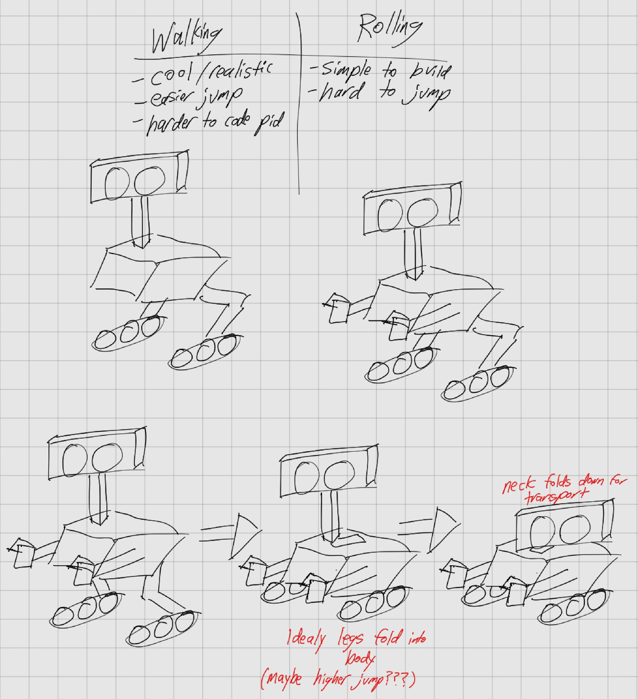
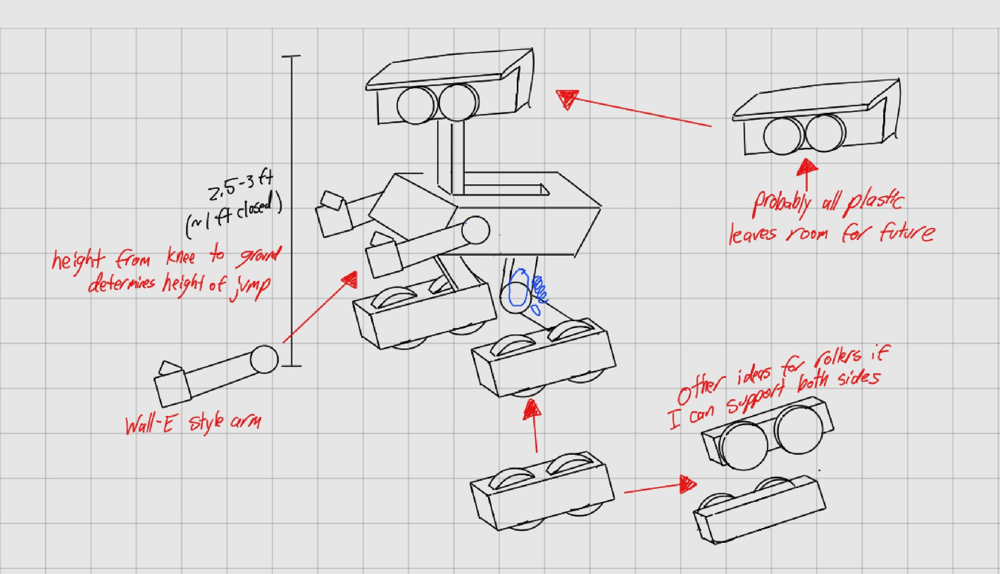
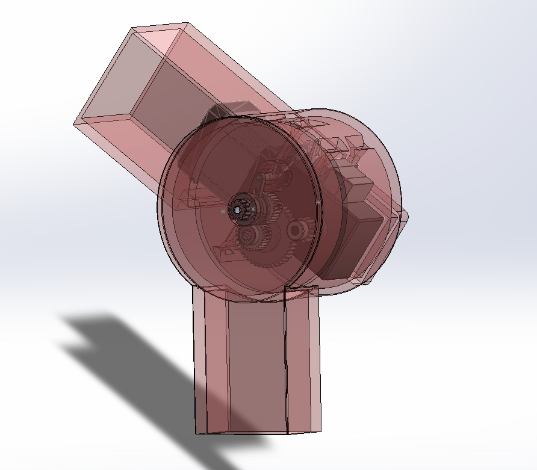

Original Concept Sketches
Every complex project starts on paper. Before opening CAD, I mapped out the core design of my idea of a personal robot at the airport. The primary goal was visualizing how to package a high-torque transmission, a heavy-duty spring, and the necessary sensors into a compact knee joint to make the robot jump.


The Core Idea
These initial drawings locked in the idea of what this project will look like long term and gave me a strong base to work off of.
Knee Transmission Assembly
The core capability of the bipedal design requires an instantaneous release of kinetic energy. To achieve this, I designed a custom dog-clutch transmission that allows a high-torque stepper motor to gradually compress a heavy-duty spring, before decoupling instantly to initiate a jump.
Dog Clutch Shear Analysis
During initial load modeling, translating the conceptual mechanics into printable FDM parts posed several clearance and tolerance challenges, specifically surrounding the engagement teeth of the main clutch.


The Problem
Early iterations of the 3D-printed transmission suffered from shear failure on the engagement teeth due to the sudden application of torque when the loaded spring was released. The interior corners created heavy stress concentrations.
The Iteration
I returned to SolidWorks to redesign the engagement geometry, adding specific filleting to distribute stress across the structural layers of the 3D print, optimizing the design specifically for the anisotropic properties of FDM manufacturing.
Knee Prototype Analysis & Tolerance Adjustments
Hardware Audit: FDM Shrinkage
Following the initial print of the V1 knee assembly, physical testing revealed that FDM shrinkage caused tolerance stacking issues with the bearing press-fits, and the active torque required significantly thicker load-bearing walls.
Design for Assembly (DFA) Improvements
Beyond simple tolerance tweaks, shifting the servo mount 2mm and realigning the screw holes on the donut component were critical DFA changes to allow actual tools to reach the hardware during physical assembly.
// FILE: v2_hardware_revision_notes.txt
// STATUS: Pending CAD Update
- Screw holes smaller (screw dia 2.5mm)
- Screw inset of 2.5 mm
- Long Screw between gear and motor box
- On hollow donut part shift upper screw holes for easy assembly
- Screw holes need to be .5mm smaller to account for tight threading
- gear press fit on outer face needs to be a lot tighter too much tolerance decrease by .4mm?
- bearing holes shrink by .2 .2 and .7
- double thickness of motor mount
- increase thickness of middle bearing walls
- shift servo mount closer to output side for easier assembly ~2mm